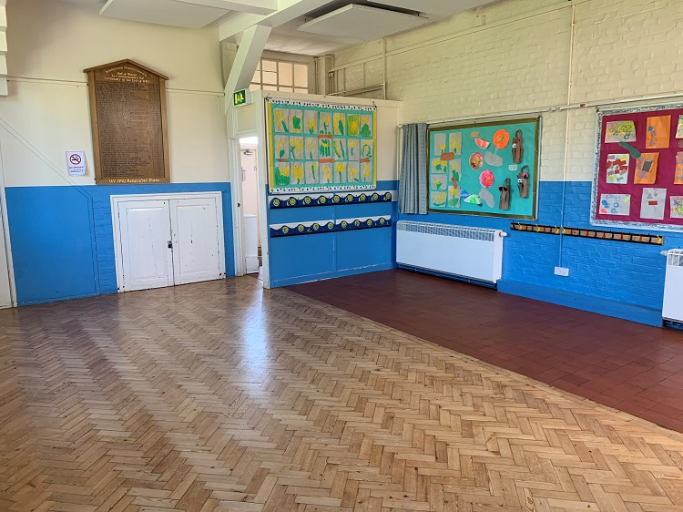
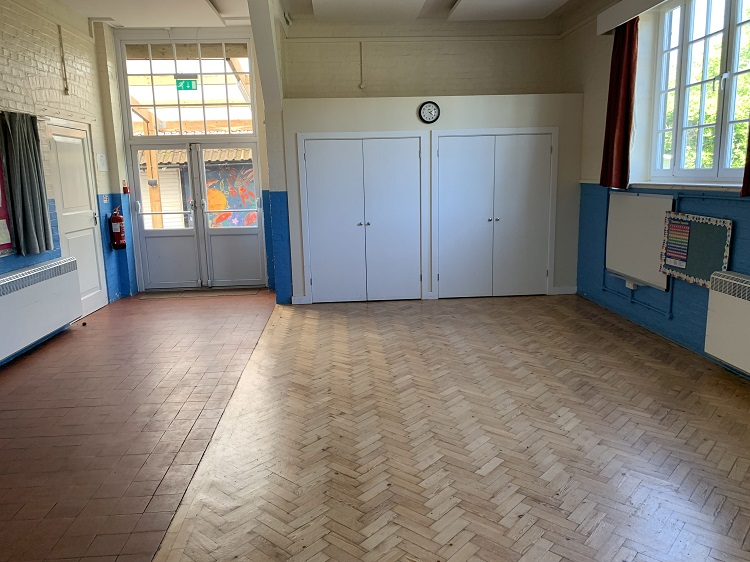

The Halsey Room, previously known as the Small Hall consists of a 47.29 sqm open area.
Sir Laurence Halsey (1871-1945) was the 1st Chairman and served 23 years (1921-1944). He gave the monies for the hall to
be built. He is buried across at St Mary’s Worplesdon rest of his family in Pirbright. He did not marry or have a family
of his own. He lived at Gooserye on Whitmoor common.